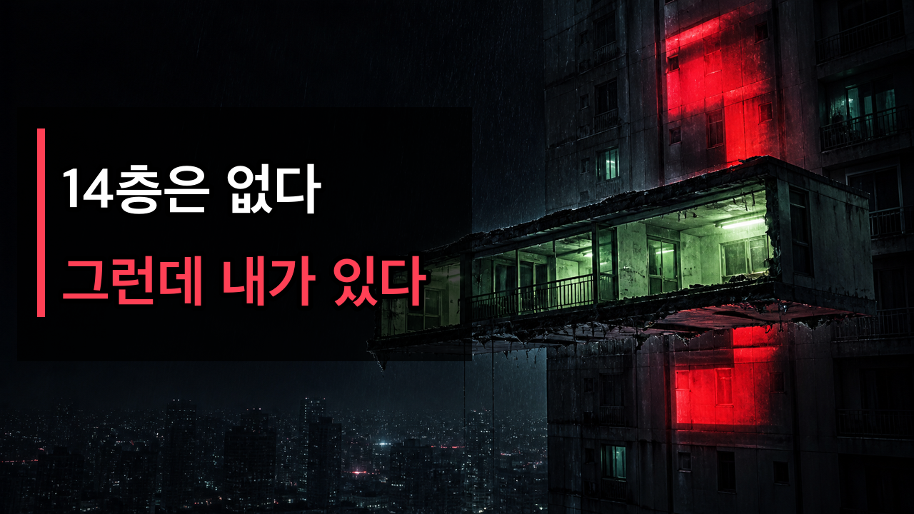
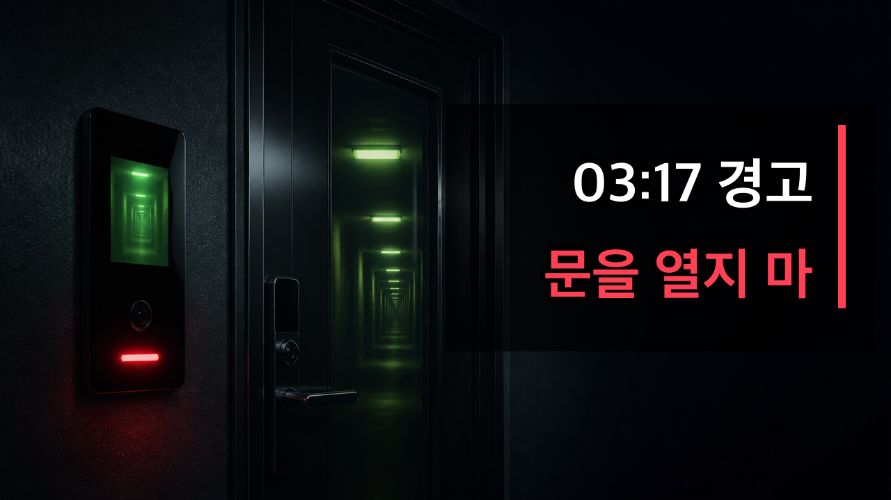

YOUTUBE PUBLISH KIT
새벽 3시 17분, 아파트 한 층이 사라졌다
제목, 설명, 태그, SNS 홍보문을 한 화면에서 바로 복사할 수 있습니다.
MAIN TITLE
메인 제목
새벽 3시 17분, 존재하지 않는 14층에서 방송이 나왔다
ALTERNATIVES
추천 제목 5가지
14층은 없다. 그런데 나는 1402호 안에 있었다 | 아파트 괴담
엘리베이터는 13층 다음 15층으로 갔다
새벽 3시 17분, 어머니가 문 밖에서 말했다
20년 동안 우리 엄마를 흉내 낸 것은 누구였을까
이사 간 집에 1402호가 다시 배정됐다
DESCRIPTION
설명란 + 타임스탬프
새벽 3시 17분, 아파트 방송이 켜졌습니다.
“현재 14층은 존재하지 않습니다. 14층을 기억하는 세대는 현관문과 계단 문을 열지 마십시오.”
문제는 그 방송을 들은 제가 바로 14층 1402호 안에 있었다는 겁니다.
엘리베이터는 13층 다음 15층으로 움직였습니다. 복도는 건물보다 길어졌고, 호수를 말한 집부터 사라졌습니다. 그리고 20년 전 기록에서 어머니 이름 옆에 ‘미복귀’라는 글자가 발견됐습니다.
불을 끄고 이어폰으로 들어 주세요. 18분 동안 이어지는 창작 아파트 괴담입니다.
⏱️ 타임스탬프
00:00 존재하지 않는 14층의 방송
00:43 어머니의 마지막 통화
01:55 정상적으로 존재했던 14층
03:22 냉장고에 남은 네 가지 규칙
04:25 14층을 건너뛰는 엘리베이터
06:30 모든 시계가 멈추기 시작했다
08:04 건물에서 분리되는 한 층
09:18 호수를 말한 세대부터 삭제
10:58 끝없이 늘어난 14층 복도
11:57 10년마다 반복된 분리 기록
13:00 20년 동안 어머니를 흉내 낸 존재
14:05 미등록 거주자 재배정
14:54 13층으로 탈출
15:40 현실에서 사라진 한 층
16:11 주소와 사진까지 바뀐 현실
17:04 1402호에서 온 음성 메시지
17:28 엘리베이터 없는 새집
17:47 다시 시작된 새벽 3시 17분
17:54 1402호 재배정 완료
이 영상은 완전한 창작 공포 이야기입니다. 세림아파트, 등장인물, 사건과 기록은 모두 허구이며 실존 장소나 사건과 관련이 없습니다.
#공포이야기 #괴담 #아파트괴담 #무서운이야기 #오디오드라마
TAGS
태그
PINNED COMMENT
고정 댓글
여러분이라면 문 밖에서 어머니 목소리가 들렸을 때 열었을까요? 가장 먼저 소름 돋았던 장면의 타임스탬프를 남겨 주세요. 이 이야기는 완전한 창작입니다.
THUMBNAILS
썸네일 2종


SOCIAL
SNS 홍보문
PUBLISH TIME
게시 최적화 시간
1순위: 금요일 또는 토요일 오후 10시 (한국 시간)
2순위: 일요일 오후 9시 (한국 시간)
예약 업로드는 공개 1~2시간 전에 완료하고, 공개 직후 30분 동안 댓글에 응답합니다.
FILES
업로드 파일
권장 영상: 2026-012-missing-fourteenth-floor-youtube.mp4
자막 번인본: 2026-012-missing-fourteenth-floor-youtube-captioned.mp4
별도 자막: captions.srt / captions.vtt
사양: 1920×1080 · 60fps · 18분 26초
미드롤: 08:04, 13:00
자막 번인본: 2026-012-missing-fourteenth-floor-youtube-captioned.mp4
별도 자막: captions.srt / captions.vtt
사양: 1920×1080 · 60fps · 18분 26초
미드롤: 08:04, 13:00